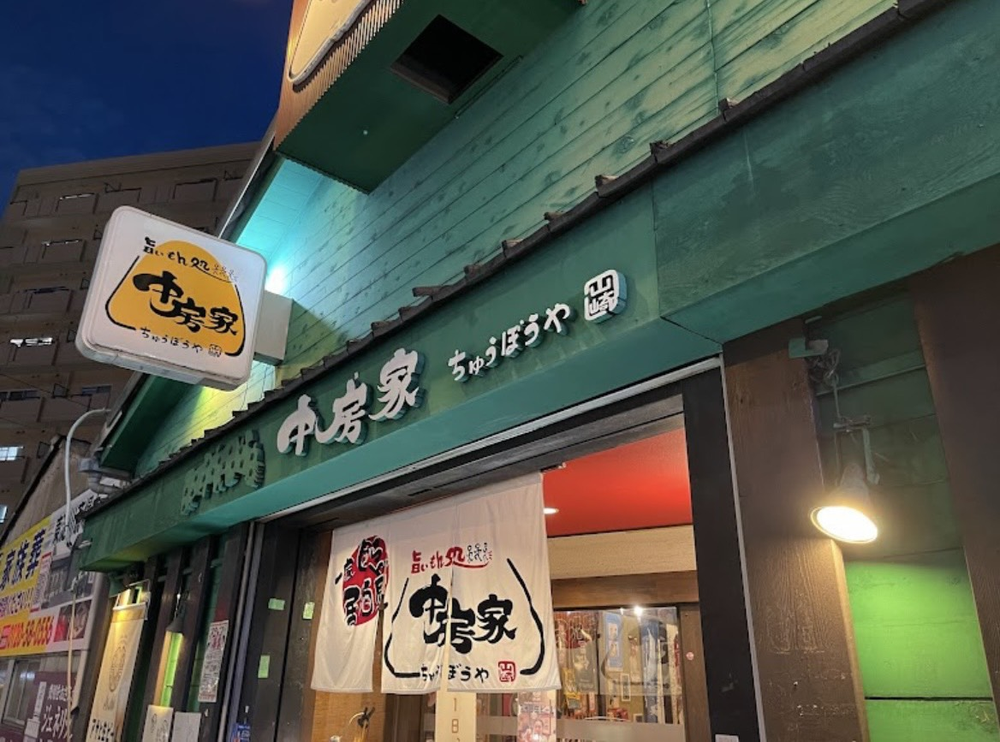
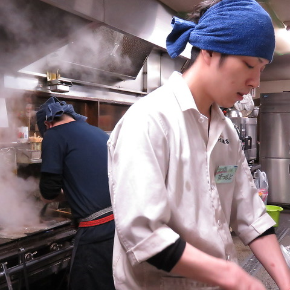
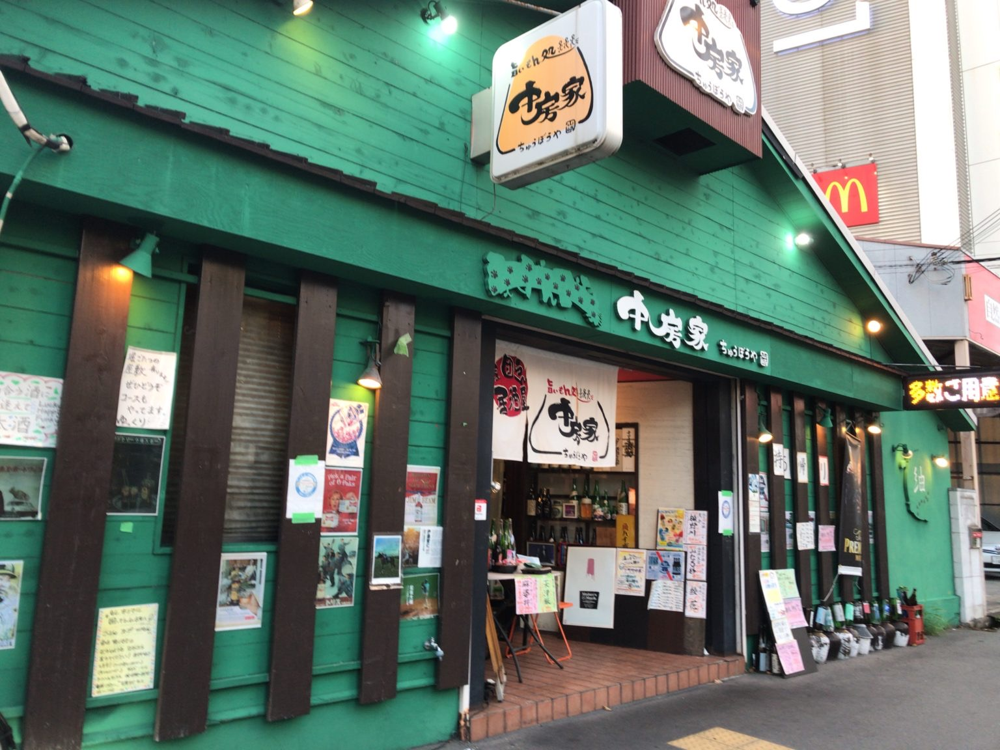
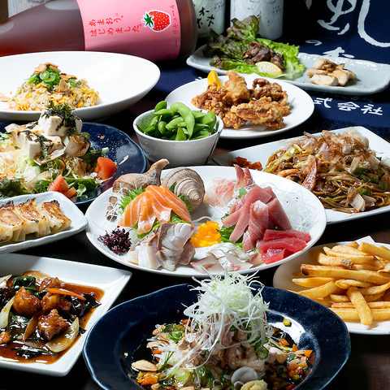
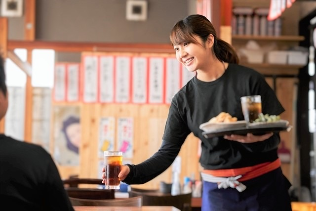
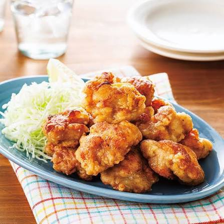
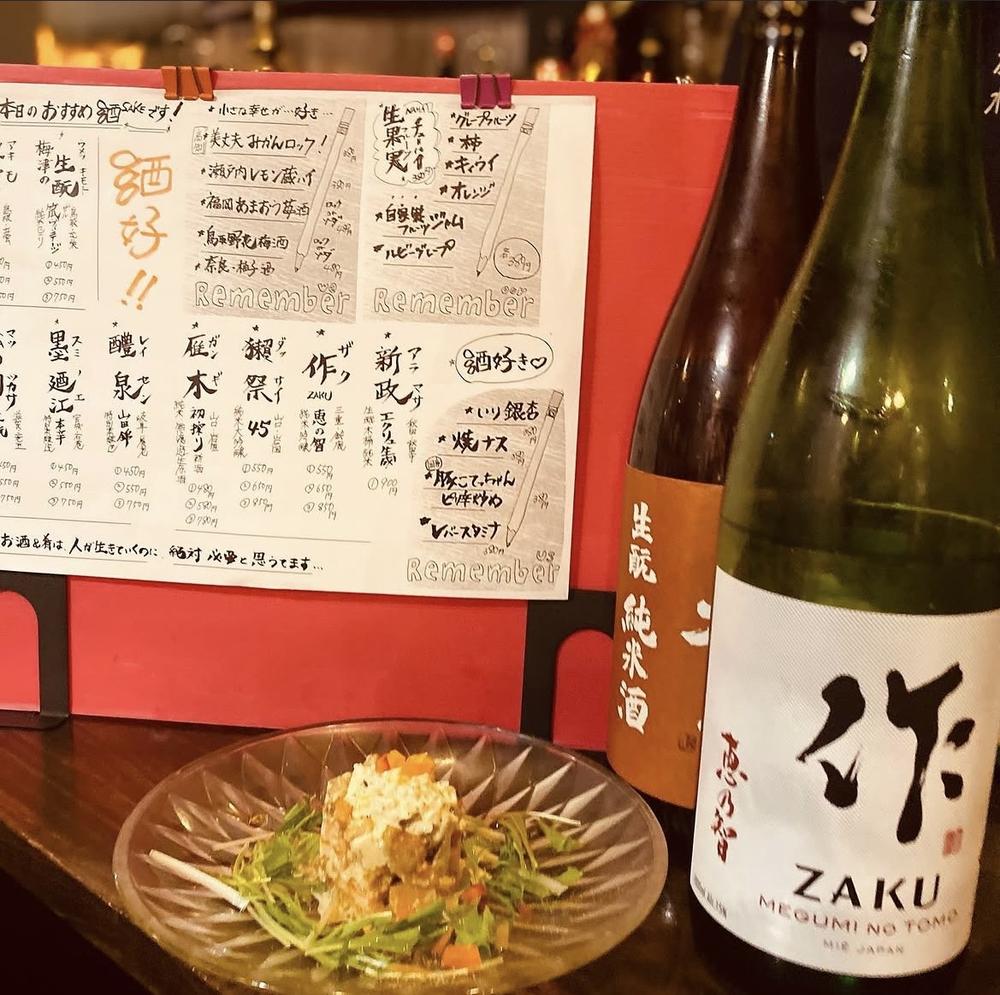
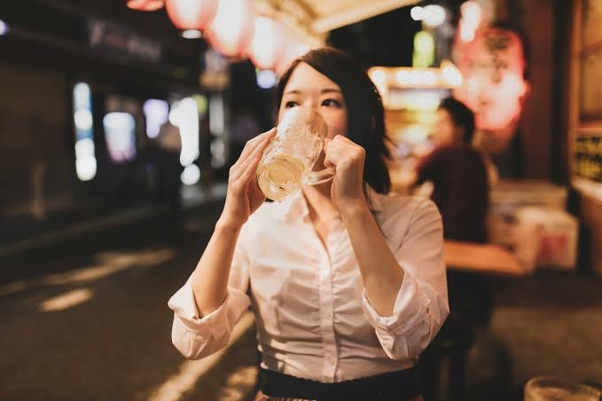
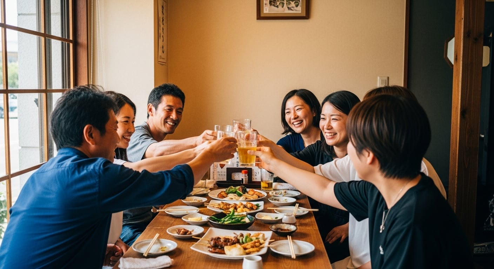
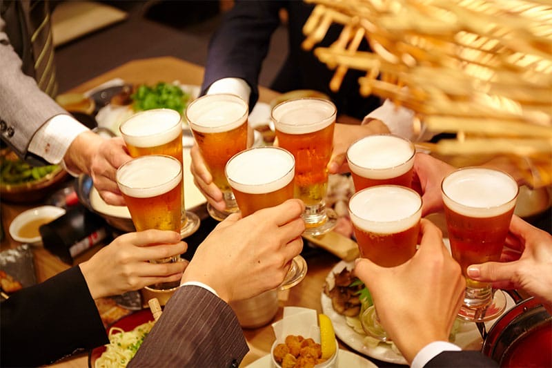

ファーストビュー写真 差し替え予定
大阪市東淀川区菅原・JR淡路駅から徒歩圏
うまいもんを、
腹いっぱい。
中華料理から手作りの一品料理まで。
ランチも、晩ごはんも、ちょっと一杯も。
気取らず楽しめる、淡路・菅原の大衆居酒屋「中房家」。
中華料理・鳥料理 手作りの一品料理 ランチ／夜営業 ひとりでも、みんなでも
中房家とは
お腹いっぱいだけじゃない。
また来たくなる、街の中房家。
しっかり食べたい日も、ちょっと飲みたい日も。中房家は、中華料理から手作りの一品料理まで、 気軽に楽しめる淡路・菅原の大衆居酒屋です。
「美味しかった」だけじゃなく、「店員さんが元気」「また来たい」。 そんな声をいただけることも、中房家が大切にしていることのひとつです。
※店舗としての正式なごあいさつ文は、店主様の言葉に差し替え予定です。要確認


Why 中房家
中房家が、選ばれる理由。
-
うまい
中華料理から手作りの一品料理まで。「今日は何を食べよう？」と迷うことまで楽しめる、料理の幅広さ。
-
腹いっぱい
しっかり食べたい日にうれしい、ボリュームとコストパフォーマンス。「今日はガッツリいきたい」に応えます。

-
人があったかい
元気な声掛けと、気持ちのいい接客。料理だけじゃないところが、通いたくなる理由になっています。


Lunch
昼は、しっかり。
「今日はガッツリ食べたい」。そんな日のお昼にも、中房家。 日替わりランチや定食、麺・ご飯ものなど、しっかり食べたい方に楽しんでいただけるランチをご用意しています。
- ランチ営業時間
- 要確認
- ランチの内容
- 日替わりランチ・定食・麺・ご飯もの 要確認
- 価格
- 要確認
※口コミでは1,000円前後でのランチ利用例が確認できます（金額は口コミ上の一例で、現在の価格は要確認）。
Dinner
夜は、食べて、飲んで、楽しもう。
晩ごはんとしてしっかり食べるのも、仲間と料理を囲んで飲むのも。
中華料理や手作りの一品料理を楽しみながら、気取らず過ごせるのが中房家です。

料理と一緒に、もう一杯。
料理に合わせて、お酒も気軽に。口コミでは日本酒を楽しまれている声も確認できます。
- 日本酒
- その他ドリンク 要確認
※ドリンクの詳しいラインナップ・価格は店舗確認後に掲載します。
※口コミでは夜の利用で2,000〜3,000円程度という声が確認できます（金額は口コミ上の一例で、現在の価格は要確認）。
店内・利用シーン
ひとりでも、家族でも、みんなでも。
ふらっと一人で。仕事のあとに仲間と。休日に家族で。
どんな使い方でも肩ひじ張らずに過ごせるのが、街の大衆居酒屋のいいところです。

ひとりで、さっと一皿
「今日は一人でしっかり食べたい」ときにも入りやすい、気負わない雰囲気です。

家族で、いろいろ頼んで
料理の種類が多いので、それぞれ好きなものを頼めます。

みんなで、囲んで飲んで
大人数でのご利用可否・席の種類は店舗へお問い合わせください。
※席数・座敷・個室・宴会や貸切の対応は確認中です。要確認
お客様の声
「また来たい」が、うれしい。
口コミでくり返しお褒めいただいているのは、この5つです。
-
コストパフォーマンス
「この内容でこの価格」という評価を多くいただいています。
-
ボリューム
しっかり食べたい方から「お腹いっぱいになる」との声が続いています。
-
料理のおいしさ
中華から一品料理まで、味への評価をいただいています。
-
メニューの豊富さ
「選ぶのが楽しい」と言っていただけることも多いです。
-
スタッフの接客
元気な声掛けや気持ちのいい応対に、うれしい言葉をいただいています。
※Googleマップ・食べログ等でいただいた口コミの傾向をまとめたものです。実際の口コミ本文を掲載する場合は、出典と掲載可否を確認のうえ差し替えます。要確認
アクセス
中房家へのご案内
- 店名
- 中房家（ちゅうぼうや）
- 住所
- 大阪市東淀川区菅原7-14-2郵便番号 要確認 Googleマップで開く
- 電話
- 06-6990-5578
- 最寄り駅
- JR淡路駅から約522m
- ジャンル
- 中華料理・鳥料理・手作り一品料理／大衆居酒屋
- 営業時間
- 要確認
- 定休日
- 要確認
- 駐車場
- 要確認
- お支払い方法
- 要確認
- ご予約
- お電話にて（受付時間・条件は要確認）
JR淡路駅から少し歩きます。駅からの徒歩ルート写真を追加すると、初めての方が迷いません。写真素材要追加
よくある質問
来店前に、よくいただくご質問。
予約はできますか？
お電話でのご予約を承っています。受付時間や人数の条件については、店舗へご確認ください。要確認
ひとりでも利用できますか？
お一人でのご利用も歓迎しています。詳しい席の状況は店舗へお問い合わせください。要確認
ランチはありますか？
日替わりランチや定食などのランチ営業を行っています。現在の内容・時間は店舗へご確認ください。要確認
テイクアウトはできますか？
過去にテイクアウトのご利用実績はありますが、現在の対応状況は店舗へご確認ください。要確認
駐車場はありますか？
確認中です。要確認
大人数でも利用できますか？
ご利用可能な人数・お席については店舗へお問い合わせください。要確認
支払いにカードや電子マネーは使えますか？
確認中です。要確認